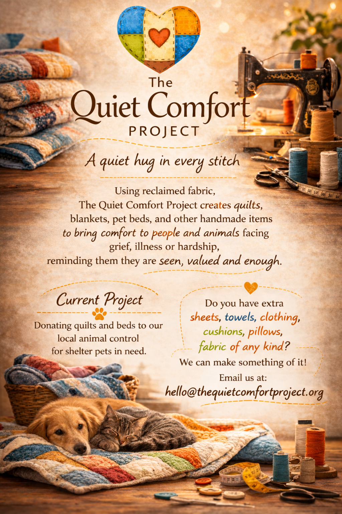

We handcraft unique, useful items designed to bring warmth and character into your everyday life. Crafted from reclaimed fabrics, our blankets, bags, and gear are built for purposeful living—and every purchase helps us fund custom donation items tailored to the specific needs of people and animals in hardship.
A heartfelt thank you to Talmid Street, Creative Designworks, LLC and Strapworks for your generous donations of materials, helping us to create beds, collars and leashes for pets in need.
Your kindness is becoming comfort, safety and love for those who need it most.